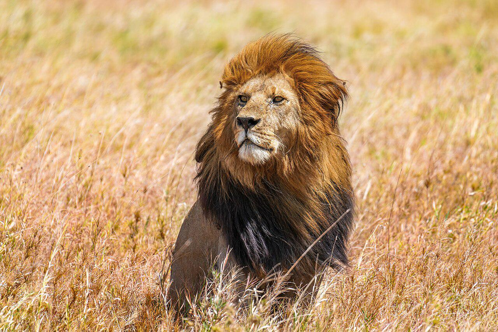

Estos carnívoros tienen en su dieta más de 85 especies para alimentarse y su forma de caza es completamente letal. Puede escalar, arrastrarse y nadar, por lo que difícilmente una presa se le escapa. A su vez, sus dientes son tan potentes, que lo posiciona en el primer lugar de todos los felinos en tener la mordida más fuerte (empatado con la pantera nebulosa), incluso antes del tigre y león y como el segundo de todos los mamíferos del mundo, después de la hiena manchada, que se alimenta de carroña.
Para poner un ejemplo de su fuerza, una vez que el jaguar se abalanza contra su presa, este se va directamente al cuello para causarle asfixia, o bien incrusta sus poderosos colmillos en la parte posterior del cráneo, atravesando el hueso y llegando hasta el cerebro.
Los jaguares son capaces de atravesar pieles gruesas y rugosas de reptiles y perforar sin problema caparazones de tortugas. De igual manera, puede arrastrar hasta ocho metros animales muy pesados y convertir sus huesos en polvo. Con esas habilidades y técnicas de ataque únicas puede cazar animales salvajes de hasta 300 kg.
El león es el único felino presente en África que forma manadas, lo que lo distingue de otras especies como los leones de Asia. Su tamaño adulto varía considerablemente, siendo los machos significativamente más grandes que las hembras. Los machos suelen alcanzar una longitud de 1.8 a 2.1 metros, incluyendo la cola, y un peso que oscila entre 180 y 190 kilogramos, aunque algunos individuos excepcionales pueden superar los 250 kilogramos. Las hembras, por su parte, miden entre 1.5 y 1.8 metros y pesan entre 150 y 180 kilogramos. La melena, característica distintiva de los machos, varía en color desde el marrón rojizo hasta el negro intenso, y su densidad y tamaño dependen de la edad, la salud y el entorno. Esta melena no solo sirve para camuflarse, sino que también es un indicador de la calidad genética y la madurez del individuo.
